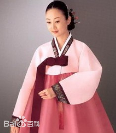

- 民族简介
- 文化习俗
- 历史发展
- 旅游介绍
朝鲜族
朝鲜族人口为1830929人（2010年），主要分布在吉林、黑龙江、辽宁东北三省，集中居住于图们江、鸭绿江、牡丹江、松花江及辽河、浑河等流域。其中，吉林省朝鲜族人口为114.5万人，黑龙江省为38.8万人，辽宁省为24.1万人。此外，还有14.8万多朝鲜族散杂居于北京、山东、内蒙古、河北、天津等地。改革开放后，随着中国经济的迅速发展，越来越多的朝鲜族人口由传统居住地东北三省迁往京津地区、黄河下游、长江下游、珠江下游地区等沿海经济开放区。
族称
在朝鲜语或韩语语境下，“朝鲜族”（조선족）的称呼特指中国少数民族朝鲜族，是拥有中华人民共和国国籍的中国人，在非中国地区生活的朝鲜民族人不自称”朝鲜族“（조선족）。 韩国人自称“大韩民族“或“韩民族“，朝鲜人自称“朝鲜民族“，中亚高丽人自称“高丽人”。 应当避免出现以“朝鲜族”（조선족）的词语称呼韩国人、朝鲜人及其他非中国地区的韩裔或朝裔造成的误会。
朝鲜族最大的聚居区是吉林省延边朝鲜族自治州，2000年全州人口221万，其中朝鲜族有80万人，占我国朝鲜族总人口的41.6%。延边朝鲜族自治州位于吉林省东部，地处中俄朝三国交界，东与俄罗斯滨海边疆区接壤，南隔图们江与朝鲜咸境北道、两江道毗邻，濒临日本海与韩日相望。自治州下辖延吉、图们、龙井、和龙、珲春、敦化六市及安图、汪清二县，全州面积4.27万平方公里，约占吉林省总面积的1/4。位于吉林省东南部的长白朝鲜族自治县，是朝鲜族另一个民族自治地方，处于长白山的环抱之中，2000年全县朝鲜族有1.36万人。 
朝鲜族的传统服装与其生活方式相吻合。朝鲜族居住以火炕为中心，平时男人盘腿而坐，而妇女坐相一般是双膝着地的跪式，所以衣着多是宽松式。朝鲜族一般喜着白衣素服，显示出喜爱清净朴素的特性，故有“白衣民族”之称。
在服饰中最具特色并至今仍为人们所喜欢的要数女装。朝鲜族女装分上、下装，上装“则羔利”(短衫)多用色彩明快、花纹漂亮的绸缎或纱类缝制，衣襟很短，只及胸部，袖口略瘦，不用纽扣，以前襟的两个彩色长带系成蝴蝶形。下装为宽松式的彩色高腰长裙，它裹在两三层内衣外，使之更加合身，穿法是先穿裙后穿短衫。与这种服饰相协调，习惯上多穿白色或天蓝色的船型勾鼻胶鞋，这与服饰形成一体，显示出曲线美。这种打扮，如今只能在各种喜庆节日、盛会中所见。
朝鲜族居住于北方，又多从事水稻生产，直接影响其主食习惯的形成。在朝鲜族传统饮食中，稻谷类和蔬菜为基本饮食，菜肴通常以辣为特征。在日常饮食中，一般以米饭为主食，以菜汤为副食，兼备各种风味小菜。朝鲜族历来以素食为主，不喜欢吃油腻的食物，其饮食特点可以概括为辛辣、爽凉、清淡。
传统的朝鲜族住房很有特色，房屋一般建在沿山的平川地带，房屋正面朝阳，依山傍水，保持朴素洁净，尽量与自然环境相融合。房屋多为土木结构的草房或瓦房，屋顶多为四面斜坡，房屋间数多，除灶间、牛房、碓房等房间外，其他全部为起居室。房屋的门窗不分，房间与屋外、房间与房间之间都以滑动拉门隔开，拉即是通行的门，关则是窗或间隔，所以屋内敞亮，通风良好，出入方便。房屋取暖用称为“温突儿邦”（意为温石炕）的火炕。在厨房锅灶烧火，其热气和浓烟通过炕下通道出至户外，使整个炕面温热。火炕非常适合东北冬冷夏凉气候，也适合朝鲜族的传统生活方式。过去，朝鲜族一般不使用椅子和睡床，桌子和饭桌均是短腿的矮桌，不用时迭放在一边。火炕可作睡眠、用餐或开展其他活动的多种用途。这是朝鲜族传统房屋的特点。如今，传统的朝鲜族房屋在城市里已不多见，在农村其内部摆设也有所变化，然而在朝鲜族农村和城市部分家庭仍保留着“温突儿邦”。在朝鲜族住房习俗中也能看出良好的邻里关系，他们特别重视邻里之间的和睦互助。村里谁家盖房子，各家均出人帮忙，这种劳动不计报酬，相应地，主人家也拿出好酒佳肴招待，以表谢意。 朝鲜族非常重视家庭礼仪，自出生到丧亡都有许多礼仪相伴。在朝鲜族的人生周期中最为引人注目的庆典有周岁生日、结婚典礼及60周岁花甲。
历史沿革
朝鲜族是由相邻的朝鲜半岛陆续迁入、定居东北地区而逐渐形成的我国跨境民族之一。1982年全国人口普查时发现，早在明末清初，有一部分朝鲜族的祖先就已定居在我国华北、东北境内。如河北省青龙县塔沟及辽宁省盖县朴家沟村姓朴的朝鲜族，他们在当地定居已有300多年的历史。
从19世纪中叶开始，有更多的朝鲜人接连不断地从朝鲜半岛迁入，这是中国朝鲜族的主要来源。由于当时朝鲜封建统治阶级残酷的剥削和压迫，特别是1869年前后朝鲜北部遭受了连续几年的自然灾害，饥寒交迫的朝鲜农民纷纷背井离乡，越过鸭绿江和图们江来到中国，在两江一带开垦，同汉、满等族人民杂居共处。据统计，1870年鸭绿江北岸一带已有28个朝鲜族聚居乡。1881年（清光绪七年），延边地区朝鲜族已达1万多人。1883年，在集安、临江、新宾等县的朝鲜族居民已有3.7万多人。同一时期，乌苏里江沿岸一带也移入为数不少的朝鲜农户。但此时迁入人口还不是很多，大多数春来秋去，居住尚不稳定。 1953年全国第一次人口普查时，朝鲜族人口为111.1万人。
作为一个农业民族，朝鲜族以在寒冷的北方种植水稻著称，他们在我国农业史上创造性地揭开了崭新的一页。原来图们江、鸭绿江流域多为山区和丘陵，气候寒冷，无霜期最短110天，最长160天，而且都是野草丛生，树根盘绕的荒原或沼泽地带，一般不易种植水稻。但朝鲜族先民不畏艰辛，刨地拓荒，积极试种水稻，终于使水稻在我国东北地区得以种植。在通化县大甸子等地，最早试种水稻成功，以后扩大到临江、怀仁、兴京、柳河、海龙等地，1877年延边开始种植。1906年，朝鲜族农民在和龙县勇智乡大教洞开掘了长达1308米的渠道，灌溉了33顷水田，并获得较高产量，从此延边地区的稻田面积逐年增加，成为我国东北地区著名的水稻产区。据统计，至20世纪20年代，吉林省延边地区、吉林地区水田的100%和通化地区水田的85%，黑龙江省水田的100%，辽宁省开原地区水田的90%、兴京地区和沈阳地区水田的85%、抚顺地区水田的80%和丹东地区水田的70%，均是由朝鲜族人民开发耕种的。
朝鲜族人民勤劳、勇敢，他们从朝鲜半岛移居中国东北时一无所有，在中国深受日本殖民统治者、反动政府和封建地主的三重压迫和剥削，因而他们的革命性很强。朝鲜族人民积极参加了中国共产党领导的各个阶段的反帝、反封建斗争，为新中国的建立做出了自己应有的贡献。
传统的朝鲜族住房很有特色，房屋一般建在沿山的平川地带，房屋正面朝阳，依山傍水，保持朴素洁净，尽量与自然环境相融合。房屋多为土木结构的草房或瓦房，屋顶多为四面斜坡，房屋间数多，除灶间、牛房、碓房等房间外，其他全部为起居室。房屋的门窗不分，房间与屋外、房间与房间之间都以滑动拉门隔开，拉即是通行的门，关则是窗或间隔，所以屋内敞亮，通风良好，出入方便。
朝鲜族舞蹈具有自己鲜明的民族特色，主要包括农乐舞、长鼓舞、扇子舞、象帽舞、顶水舞、刀舞等。其中，农乐舞是朝鲜族中广为流传的民间舞蹈之一，由农乐游戏演变而来，表演以打击乐器锣鼓为先导，领衔者为一打铜锣者，舞蹈的开始、中间的变换及结尾，均由打锣者指挥。表演时，必须有一位打旗的人，旗上要写上“农者天下之大本也”八个大字，站在打锣者之前，尽情舞动，满怀豪情。此外，长鼓舞也是朝鲜族代表性的舞蹈之一，以独特而典雅飘逸的舞姿而驰名中外。长鼓舞以柔软的扛手、伸肩、鹊雀步等动作为主，以肩挎长鼓，右手持鼓鞭，边跳边敲的形式表演，身、鼓、神融为一体，高度协调和统一，有独舞、双人舞和群舞等多种。
朝鲜族民俗风情园
延边朝鲜族民俗园座落在延吉市区南部2公里的帽儿山国家森林公园内。是一个收集、保存朝鲜族文化智慧和气息的观光场所，在这里可以欣赏和体验朝鲜族传统生活习惯，民俗园每天演出欢快的朝鲜族歌舞。 古朴的民居，秋千、跳板、摔跤场，还有美食街、婚礼厅、在这里游客可以穿上朝鲜族服装，学着简捷明快的舞步参与朝鲜族花甲、婚礼，当一回朝鲜族新郎。
红旗村
红旗村是安图至长白山旅游途中唯一的纯朝鲜族居住村。全村共有100户居民。村子座落在山间开阔地，依山傍水，一幢幢具有民族建筑风格的房屋整齐地排列在小溪两旁，到此可以领略到朝鲜族传统的乡土情。每当劳动之余，村里的男女老幼便集中在一起，跳起多彩多姿的朝鲜族舞蹈，不时有人出来高歌古老而优美的民谣，浓厚的欢乐气氛使人们在狂欢之中如醉如痴。
延边州博物馆
延边博物馆始建于1960年，坐落在延边朝鲜族自治州延吉市，是一座集地方历史和朝鲜族民族特色于一体的综合性博物馆。 博物馆馆藏文物达近1.5万件，国家珍贵文物500多件。馆藏文物主要是以古代文物、近现代文物和朝鲜族民俗文物组成。其中有唐代渤海贞孝公主墓墓碑和壁画（临摹本）、室相纹铜镜、双系釉陶罐等，也有反映延边人民革命斗争历史的苫被单、延吉炸弹、抗日树标等。基本陈列有朝鲜族民俗陈列、千秋正气-朝鲜族革命斗争史陈列、延边出土文物陈列共三大陈列。博物馆区域划分科学、合理，功能完善，有藏品保管区、文物修复区、展览区、观众互动区、公众服务区、科研区、办公区七大功能区域。博物馆以精美的设计及丰富的内涵，生动展现了延边的昨天、今天和明天。